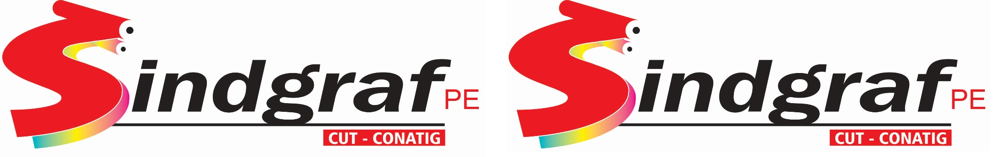

SINDICATO DOS TRABALHADORES NAS INDÚSTRIAS GRÁFICAS DO ESTADO DE PERNAMBUCO
Rua do Veiga, 201 | Santo Amaro | Recife-PE | CEP: 50040-110 |
Fone: (81) 3222.5390 – 3221.3099 – email: comunica@sindgraf-pe.org.br
CLIQUE AQUI PARA VER MAIS INFORMAÇÕES SOBRE O SINDICATO
O SINDGRAF-PE tem a missão de proteger os trabalhadores das indústrias gráficas de Pernambuco em suas relações profissionais com os empresários do setor, objetivando garantir os direitos conquistados na Convenção Coletiva de Trabalho.
O cumprimento desses direitos é fundamental para a busca do bem-estar da categoria. Portanto, fiscalizar e reivindicar são metas diárias do Sindicato. Fiscalizar para garantir os direitos já alcançados e reivindicar para buscar melhores salários e condições de trabalho.
A organização dos trabalhadores é outra tarefa permanente do SINDGRAF-PE. A categoria é mobilização e articulada por valores que além de focar em interesses internos, também amplia a respectiva intervenção junto à sociedade. A luta por justos salários e condições de trabalho é consequência direta da compreensão cidadã.
Logo, é fundamental dialogar com outros setores, a fim de colaborar para alcançar o pleno exercício das políticas públicas no estado, país e no mundo. O Sindicato é filiado a Central Única dos Trabalhadores (CUT) e a Confederação Nacional dos Trabalhadores da Indústria Gráfica (Conatig). E tem uma aliança internacional com a UNI Global Union.
O SINDGRAF-PE entende que sindicato forte é aquele que tem a participação dos trabalhadores. A força da categoria está na atuação firme dos dirigentes junto com a contribuição dos trabalhadores.
A classe patronal somente respeita o trabalhador que tem posição e representação forte. Dessa forma, o SINDGRAF-PE estimula o trabalhador a entender o respectivo papel na vida do Sindicato. O número de caso de descumprimento de direitos trabalhistas aumenta nas empresas em que o quantitativo de associados é menor. Portanto, filiasse ao sindicato e mude esta realidade.
Faça parte desse time!